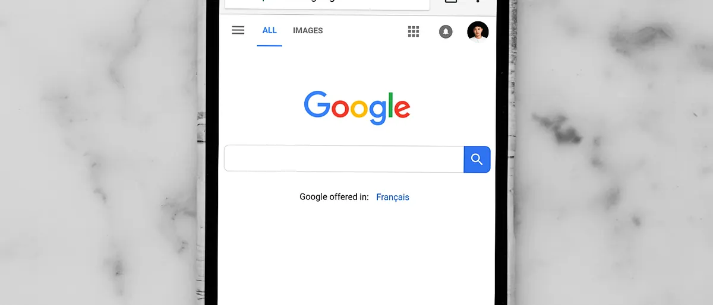

Avant d'appeler un plombier, de réserver un cours de sport ou de choisir une fiduciaire, la plupart des gens font la même chose : ils tapent quelques mots dans Google. Si votre entreprise n'apparaît pas dans les premiers résultats, pour beaucoup de clients potentiels, elle n'existe tout simplement pas.
Vos clients vous cherchent déjà
Une recherche Google exprime une intention. Quelqu'un qui tape « coiffeur Genève » ou « comptable indépendant Cologny » est prêt à agir. C'est ce qui rend le référencement naturel (SEO) si précieux : il vous met face à des personnes qui ont déjà un besoin, sans les interrompre.
On distingue en général trois types de recherches :
- Informationnelles : « comment choisir un site vitrine » ;
- Locales : « agence web Genève », « pompes funèbres Genève » ;
- Transactionnelles : « abonnement site internet prix », « réserver cours pilates ».
Une PME a tout intérêt à être visible sur les deux dernières, et à répondre aux premières avec des contenus utiles.
Ce que recouvre vraiment le référencement
Le SEO ne se résume pas à « mettre des mots-clés ». Il repose sur quatre piliers :
- La technique : un site rapide, adapté au mobile, bien structuré et sécurisé (HTTPS) ;
- Le contenu : des pages qui répondent clairement aux questions de vos clients ;
- L'autorité : des liens depuis d'autres sites, des avis, des mentions de votre entreprise ;
- Le local : une fiche Google Business Profile complète et des coordonnées (nom, adresse, téléphone) identiques partout.
SEO ou publicité Google Ads ?
La publicité (SEA) vous place en tête immédiatement, mais s'arrête dès que vous cessez de payer. Le SEO demande plus de temps, mais ses effets s'accumulent et durent. Pour une PME, la combinaison est souvent la plus efficace : la publicité pour tester une offre ou un mot-clé, le SEO pour bâtir une visibilité durable.
Six actions concrètes pour démarrer
- Un site rapide et lisible sur mobile. Plus de la moitié des visites viennent souvent d'un téléphone : testez votre site sur le vôtre.
- Une page par service, avec un titre principal clair qui contient ce que vous faites et où.
- Des balises title et meta description uniques pour chaque page : c'est ce que Google affiche dans les résultats.
- Une fiche Google Business Profile complète, avec horaires, photos et surtout des avis clients.
- Du contenu utile : une FAQ, des articles qui répondent aux vraies questions de vos clients.
- Un suivi régulier avec Google Search Console et Google Analytics pour savoir ce qui fonctionne.
Les erreurs fréquentes
- Un site d'une seule page qui mélange tous les services ;
- Des titres de pages identiques ou génériques (« Accueil ») ;
- Des textes copiés d'un fournisseur ou d'un concurrent ;
- Un site illisible sur mobile ou très lent ;
- Aucun suivi : on ne sait pas d'où viennent les visiteurs.
Exemple concret : un commerce local à Genève
Exemple illustratif. Un institut de beauté genevois a un site d'une seule page, une fiche Google incomplète et aucun avis. Il n'apparaît pour aucune recherche locale. En quelques mois, avec une page par soin, des titres explicites (« Soin du visage à Genève »), une fiche Google complète et une demande d'avis après chaque rendez-vous, il devient visible sur les recherches qui comptent pour lui. Rien de spectaculaire : de la clarté, de la régularité et de la cohérence.
Comment mesurer vos résultats
- Impressions et clics dans Google Search Console : combien de fois apparaissez-vous, et combien de personnes cliquent ?
- Pages d'entrée dans Google Analytics : par quelles pages arrivent vos visiteurs ?
- Contacts : appels, formulaires, demandes de rendez-vous, c'est ce qui compte vraiment ;
- Positions sur trois à cinq requêtes clés, suivies chaque mois plutôt que chaque jour.
Et pour votre entreprise ?
Un bon référencement commence dès la conception du site : structure des pages, titres, vitesse, contenus. C'est pourquoi nos sites sont pensés pour le référencement dès le départ. Le référencement naturel est inclus dans l'abonnement Presque Free, et la publicité Google Ads (SEA) fait partie de la formule FlexiPro. Vous hésitez sur la formule ? Parlons-en.
Sources et pour aller plus loin
- Vos clients vous cherchent sur Google avant de vous contacter : être visible est devenu une condition de base.
- Le SEO repose sur la technique, le contenu, l'autorité et le local.
- SEO et publicité se complètent : l'un dure, l'autre est immédiat.
FAQ
Le SEO est-il vraiment utile pour une petite entreprise ?
Oui, surtout pour une activité locale : les recherches du type « service + ville » représentent des clients proches et prêts à agir. Une petite entreprise bien référencée localement peut battre de plus grands acteurs sur ces requêtes.
Combien de temps faut-il pour apparaître sur Google ?
Un nouveau site peut être indexé en quelques jours ou semaines, mais gagner de bonnes positions demande généralement plusieurs mois de travail régulier.
Dois-je faire du SEO ou de la publicité Google Ads ?
Idéalement les deux : la publicité apporte des visites immédiates et permet de tester, le SEO construit une visibilité durable sans payer chaque clic.
À lire aussi
Tous les articles


Un projet de site ou de visibilité ?
Un premier rendez-vous gratuit pour faire le point sur vos besoins et votre budget.
Prendre rendez-vous